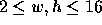

| Ships |
Probably everyone who ever attended school knows the game where two opposing players place a set of ships on a sheet of paper and try to eliminate each other's ships by guessing their location.
In our version of the game, your opponent has distributed the following seven ship patterns over a rectangular grid of squares:
xx xx xx x x x
xx xx xx xxx xxx xxx xxxx
Each ship pattern covers exactly four squares. The patterns may be rotated but not mirrored. All patterns are guaranteed to be placed completely within the boundaries of the rectangle and not to overlap each other, whereas touching another pattern or the border is allowed.
We assume that we are in the middle of the game and that several squares have already been uncovered. You will be given a rectangular grid of squares representing your current knowledge about the positions of your enemy's ships. Every square is marked by one of the following characters:
Given that information, you are to decide whether you can determine all remaining `x' squares with at most one miss, i.e. whether you could uncover the `.' squares without getting more than one `o' square before you had all `x' squares uncovered. This means you are allowed to hit a `o' if then the solution becomes unique.
The input file contains several game situations. Every test case starts with a line containing two integers w and h. These define width and height of the game rectangle, where  .
Each of the next h lines contains a string of w characters. Each of these characters is either `x', `o' or `.', depending on the state of the corresponding square.
A blank line separates each game from the next. The input file ends with a game having w = 0 and h = 0. This game should not be processed.
For each test case you should first output a line containing the number of the game, followed by a line containing either `yes.' (if you can determine all `x' with at most one miss) or `no.' (if you cannot determine all `x' without at least two misses).
Output a blank line after every game.
10 10 .x..x..... oooooxoooo oxooxxx... xxoooooo.. xoooxooo.. ooxxxxoo.. oooooxxoox ooooooxoox ooooooooxx oooooooooo 0 0
Game #1 yes.